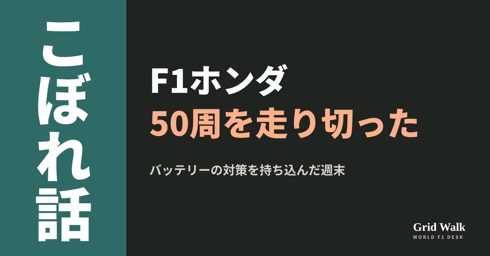
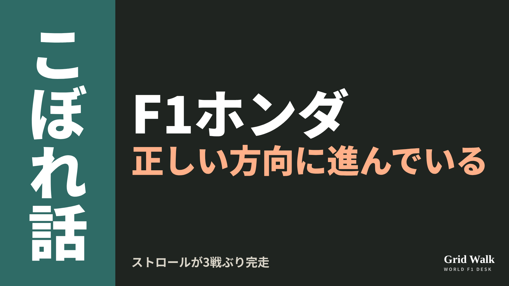

<meta charset="utf-8"><title>11/23夕方のコラム note貼り付け</title>
<style>
/* one column of numbered paste steps; text steps vs image steps differ by marker */
:root{--bg:#F5F4F0;--card:#FFFFFF;--ink:#1D2321;--mute:#5F665F;--line:#DCDAD2;--btn:#1F5FBF;--btnok:#2E8B4F;--img:#E9F3EC;--imgink:#22663B;--sans:'IBM Plex Sans JP','Hiragino Sans','Noto Sans JP',sans-serif}
@media (prefers-color-scheme:dark){:root:not([data-theme="light"]){--bg:#171A19;--card:#202423;--ink:#ECEDE8;--mute:#A3AAA2;--line:#343937;--btn:#4D8BE6;--btnok:#3FA866;--img:#1E2C23;--imgink:#8FD3A6;color-scheme:dark}}
:root[data-theme="dark"]{--bg:#171A19;--card:#202423;--ink:#ECEDE8;--mute:#A3AAA2;--line:#343937;--btn:#4D8BE6;--btnok:#3FA866;--img:#1E2C23;--imgink:#8FD3A6;color-scheme:dark}
body{background:var(--bg);color:var(--ink);font-family:var(--sans);font-size:15px;line-height:1.75;padding:20px 16px 60px}
main{max-width:680px;margin:0 auto;display:grid;gap:28px}
header h1{font-size:22px;margin:0 0 6px;text-wrap:balance}
header p{margin:0;color:var(--mute);font-size:14px}
nav{display:flex;gap:8px;flex-wrap:wrap;margin-top:12px}
nav a{border:1px solid var(--line);border-radius:999px;padding:4px 14px;color:var(--ink);text-decoration:none;font-size:14px;background:var(--card)}
.part h2{font-size:18px;line-height:1.5;margin:0 0 12px;text-wrap:balance;display:flex;gap:10px;align-items:baseline;flex-wrap:wrap}
.tag{font-size:13px;background:var(--ink);color:var(--bg);border-radius:6px;padding:1px 9px}
.steps{list-style:none;margin:0;padding:0;display:grid;gap:12px}
.st{background:var(--card);border:1px solid var(--line);border-radius:12px;padding:12px;min-width:0}
.hd{display:flex;align-items:center;gap:8px;margin-bottom:8px}
.no{width:26px;height:26px;border-radius:50%;background:var(--btn);color:#fff;display:inline-flex;align-items:center;justify-content:center;font-size:13px;font-weight:700;flex:0 0 26px}
.im .no{background:var(--btnok)}
.hd em{font-style:normal;font-size:12px;background:var(--img);color:var(--imgink);border-radius:6px;padding:0 8px}
.bx{font-size:13.5px;line-height:1.7;border:1px solid var(--line);border-radius:8px;padding:8px 10px;max-height:110px;overflow:auto;overflow-wrap:anywhere}
.bx.tall{max-height:150px}.bx p{margin:0 0 6px}.bx h2{font-size:14px;margin:8px 0 4px}.bx a{color:var(--btn)}
.st img{display:block;width:100%;max-width:100%;border:1px solid var(--line);border-radius:8px}
.sub{font-size:12.5px;color:var(--mute);margin:6px 0 0}
.cp{width:100%;margin-top:8px;padding:12px;border:0;border-radius:10px;background:var(--btn);color:#fff;font:600 15px var(--sans);cursor:pointer}
.cp.ok{background:var(--btnok)}.cp.dl{background:var(--btnok)}.cp:focus-visible{outline:3px solid var(--ink);outline-offset:2px}
.xh{font-size:15px;margin:20px 0 10px}
.fb{font-size:13px;line-height:1.7;margin:8px 0 0;padding:8px 10px;border-radius:8px;background:var(--img);color:var(--imgink)}
.opts{display:grid;grid-template-columns:repeat(auto-fill,minmax(240px,1fr));gap:10px}
.opt{min-width:0}.opt img{display:block;width:100%;border:1px solid var(--line);border-radius:8px}
.ol{display:flex;align-items:center;gap:8px;margin-top:6px}.ol b{font-size:13px;flex:0 0 auto}.ol .on{font-size:12.5px;color:var(--mute);flex:1;min-width:0}.ol .cp{width:auto;flex:0 0 auto;padding:9px 14px}.ol .cp{margin:0;padding:9px}
.toast{font-size:13px;color:var(--mute);margin-top:6px}
</style>
<main><header><h1>11/23夕方のコラム note貼り付け</h1><p>いま公開済みは1本です。青い番号は文章、緑は画像です。</p><nav><a href="#p1">1</a></nav></header><section class="part" id="p1"><h2><span class="tag">OFF GRID</span>ホンダ折原GM「正しい方向に進んでいる」　ストロールが3戦ぶり完走</h2><p class="sub">サイトに公開：18:19</p><ol class="steps">
<li class="st im"><div class="hd"><span class="no">1</span><b>見出し画像</b><em>画像</em></div><button class="cp dl" data-img="img/honda-vegas-right-direction-20261123.png" data-name="honda-vegas-right-direction-20261123_見出し画像.png">ダウンロード</button></li>
<li class="st"><div class="hd"><span class="no">2</span><b>タイトル</b></div><div class="bx" id="p1t">ホンダ折原GM「正しい方向に進んでいる」　ストロールが3戦ぶり完走</div><button class="cp" data-plain="p1t">タイトルをコピー</button></li>
<li class="st"><div class="hd"><span class="no">3</span><b>本文</b></div><div class="bx tall" id="p1r"><p>第21戦ラスベガスGPで、ホンダのパワーユニットを積むアストンマーティンは、ランス・ストロールが17位、フェルナンド・アロンソが19位でした。F1公式の結果では、ストロールは50周を走り切り、アロンソは49周でDNF（リタイア）のまま19位に数えられています。点はどちらも0です。それでも、HRCの折原伸太郎GMはレースのあと、前を向いた言葉を残しました。</p><p>元の記事へのリンクと、折原GMの1年を追った読み解きへの案内はサイトで → <a href="https://f1gridwalk.github.io/lens/honda-vegas-right-direction-20261123/?utm_source=note&amp;utm_campaign=honda-vegas-right-direction-20261123">https://f1gridwalk.github.io/lens/honda-vegas-right-direction-20261123/?utm_source=note&amp;utm_campaign=honda-vegas-right-direction-20261123</a></p><blockquote><p>「ラスベガスGP決勝をフルディスタンスで走り切れたことで、正しい方向に進んでいると確認することができました」（折原、AUTOSPORT web／日本）</p></blockquote><h2>ブラジルで2度、同じ不具合</h2><p>前戦サンパウロGPでは、ストロールの車にバッテリーの不具合が出て、レースを終えられませんでした。その経緯はコラム https://f1gridwalk.github.io/lens/honda-stroll-battery-20261113/ で書いています。ラスベガスは夜の気温が低く、長い直線のあるコースです。ホンダはその週末に、バッテリーへの対策を持ち込みました（下の折原GMの言葉）。折原GMが週末の前に何を話していたかは、読み解き https://f1gridwalk.github.io/topics/orihara-our-weak-point-is-combustion/ で紹介しています。</p><h2>持ち込んだのは、バッテリーの対策</h2><p>レースのあとの折原GMの言葉は、イギリスのGrandPrix247がチームのコメントをまとめた記事に載っています。</p><blockquote><p>「サーキットの形から厳しい週末になると分かっていましたが、予選と、とくに決勝からは興味深いデータを得られました」「週の初めに話したとおり、バッテリーの問題に向けた対策をいくつかここに持ち込みました」（折原、GrandPrix247／イギリス）</p></blockquote><blockquote><p>「良い信頼性のためには、まださらに進むべき段階があります」（同）</p></blockquote><p>この言葉のあとに、冒頭の「正しい方向」の一文が続いています。F1公式の結果では、ストロールの完走は10月のアメリカGP（15位）以来、3戦ぶりです。メキシコシティGPとサンパウロGPは、どちらもDNFでした。本人の言葉は控えめです。</p><blockquote><p>「ゴールまで行けたのは前向きなこと。でも、今年ずっと抱えている問題は同じだった」（ストロール、GrandPrix247／イギリス）</p></blockquote><p>一方で、アロンソは最後の周に車を止めています。アストンマーティンのチーフトラックサイドオフィサー、マイク・クラックの説明はこうです。</p><blockquote><p>「フェルナンドは午後のあいだずっと、ランスと抜きつ抜かれつで走っていた。でも、エンジンに問題があると感じて、最後の周に車を止めた」（クラック、GrandPrix247／イギリス）</p></blockquote><p>その問題が何だったのか、記事に説明はありません。直線の遅さは、週末の前のストロールの話（コラム https://f1gridwalk.github.io/lens/stroll-underpowered-20261120/ ）と、予選のあとのアロンソの話（コラム https://f1gridwalk.github.io/lens/alonso-honda-demo-lap-20261122/ ）で紹介しています。</p><p>編集部としては、折原GMが手応えの根拠にしたのは速さではなく、1台が50周を走り切ったことだと見ています。同じ夜にアロンソが最後の周で止まった以上、対策の効き目を見きわめるのは、残るカタールとアブダビの2戦になりそうです。</p><p><strong>点のない17位でも、50周を走り切ったことは前進だと思いますか？</strong></p><p>━━━━━━━━━━</p><p><strong>F1 Grid Walk では、世界のF1ニュースを毎日日本語でまとめています。</strong></p><p>海外の記事の要約を、毎日載せています。</p><p><a href="https://f1gridwalk.github.io/">https://f1gridwalk.github.io/</a></p><p>ほかの海外記事も読みたい方は、F1 Grid Walkへ。</p><p><a href="https://f1gridwalk.github.io/lens/honda-vegas-right-direction-20261123/">https://f1gridwalk.github.io/lens/honda-vegas-right-direction-20261123/</a></p><p>━━━━━━━━━━</p><p><a href="https://www.as-web.jp/f1/1376635">出典：AUTOSPORT web（日本）</a></p><p><a href="https://www.grandprix247.com/grand-prix-f1-weekend-news/las-vegas-grand-prix-formula-1-teams-drivers-report-from-a-hectic-race">出典：GrandPrix247（イギリス）</a></p><p><a href="https://www.formula1.com/en/results/2026/races/1300/las-vegas/race-result">出典：F1公式サイト（イギリス）</a></p><p><a href="https://www.formula1.com/en/results/2026/drivers/LANSTR01/lance-stroll">出典：F1公式サイト（イギリス）</a></p></div><button class="cp" data-rich="p1r">本文をコピー</button></li>
<li class="st"><div class="hd"><span class="no">4</span><b>ハッシュタグ</b></div><div class="bx" id="p1h">#F1 #F1jp #ホンダ #アストンマーティン #折原伸太郎 #ストロール #アロンソ #ラスベガスGP #F1こぼれ話 #OFFGRID</div><button class="cp" data-plain="p1h">タグをコピー</button></li>
</ol><h3 class="xh">X</h3><ol class="steps">
<li class="st im"><div class="hd"><b>X用の画像</b><em>画像</em></div><button class="cp dl" data-img="img/x_honda-vegas-right-direction-20261123.png" data-name="x_honda-vegas-right-direction-20261123.png">ダウンロード</button></li>
<li class="st"><div class="hd"><b>① noteをシェアするときの文</b></div><div class="bx" id="p1x0">ラスベガスGPで、ホンダのパワーユニットを積むストロールが3戦ぶりに完走しました（17位）。バッテリーの対策を持ち込んだ折原GMは「正しい方向に進んでいる」と確かめられたと話しています。noteにまとめました #F1jp #ホンダ #アストンマーティン</div><button class="cp" data-plain="p1x0">コピー</button></li>
<li class="st"><div class="hd"><b>② ①への返信</b></div><div class="bx" id="p1x1">ほかの海外記事も読みたい方は、F1 Grid Walkへ。
https://f1gridwalk.github.io/lens/honda-vegas-right-direction-20261123/?utm_source=x&amp;utm_campaign=honda-vegas-right-direction-20261123</div><button class="cp" data-plain="p1x1">コピー</button></li>
<li class="st"><div class="hd"><b>③ ②への返信</b></div><div class="bx" id="p1x2">毎日の海外F1ニュースは、日本語でこちらにまとめています。
https://f1gridwalk.github.io/</div><button class="cp" data-plain="p1x2">コピー</button></li>
</ol></section></main><script>
function done(b,msg){const t=b.dataset.t||b.textContent;b.dataset.t=t;b.classList.add('ok');b.textContent=msg||'コピーしました';setTimeout(()=>{b.classList.remove('ok');b.textContent=t},2000)}
function selectEl(el){const r=document.createRange();r.selectNodeContents(el);const s=getSelection();s.removeAllRanges();s.addRange(r)}
async function rich(el,b){
  try{await navigator.clipboard.write([new ClipboardItem({'text/html':new Blob([el.innerHTML],{type:'text/html'}),'text/plain':new Blob([el.innerText],{type:'text/plain'})})]);done(b);return}catch(e){}
  selectEl(el);let ok=false;try{ok=document.execCommand('copy')}catch(e){}
  if(ok){getSelection().removeAllRanges();done(b)}else{done(b,'選択しました。コピーしてください')}}
async function plain(el,b){
  try{await navigator.clipboard.writeText(el.innerText);done(b);return}catch(e){}
  selectEl(el);let ok=false;try{ok=document.execCommand('copy')}catch(e){}
  if(ok){getSelection().removeAllRanges();done(b)}else{done(b,'選択しました。コピーしてください')}}
let dlns=null;(async()=>{try{dlns=await window.claude?.use?.("downloads")}catch(e){dlns=null}})();
async function img(src,b){
  b.dataset.t=b.dataset.t||b.textContent;
  if(!dlns){try{dlns=await window.claude?.use?.("downloads")}catch(e){}}
  if(!dlns){b.textContent='ダウンロードできませんでした';setTimeout(()=>{b.textContent=b.dataset.t},3500);return}
  try{const blob=await fetch(src).then(r=>r.blob());b.textContent='保存の確認を開いています…';
    await dlns.save({filename:b.dataset.name,data:blob});done(b,'ダウンロードしました')}
  catch(e){const c=e&&e.code;b.textContent=c==='declined'?'キャンセルしました':c==='rate_limited'?'少し待ってからもう一度押してください':'ダウンロードできませんでした';setTimeout(()=>{b.textContent=b.dataset.t},3500)}}
document.querySelectorAll('.cp').forEach(b=>b.addEventListener('click',()=>{
  if(b.dataset.rich)rich(document.getElementById(b.dataset.rich),b);
  else if(b.dataset.plain)plain(document.getElementById(b.dataset.plain),b);
  else img(b.dataset.img,b)}));
</script>